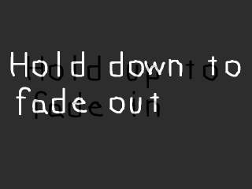

Alpha混合让你能够使表面具有不同级别的透明度。在本课中我们将blit两个表面，其中前面的一个表面能够通过改变它的alpha值使其淡入/淡出。
//帧率 const int FRAMES_PER_SECOND = 20;
SDL的alpha透明度是众所周知的慢。因为这是没有硬件加速的。无论你的系统插入了什么显卡，这都不会有太大区别。
我只是想指出，如果你发现SDL在这个演示程序中真的很慢，有可能是因为帧率被限制在20fps。
如果你想要硬件加速的图像,可以考虑OpenGL。它可以和SDL一起很好地工作。
我只是想指出，如果你发现SDL在这个演示程序中真的很慢，有可能是因为帧率被限制在20fps。
如果你想要硬件加速的图像,可以考虑OpenGL。它可以和SDL一起很好地工作。
//退出标识
bool quit = false;
//前表面的alpha值
int alpha = SDL_ALPHA_OPAQUE;
//帧率校准器
Timer fps;
//初始化
if( init() == false )
{
return 1;
}
//加载文件
if( load_files() == false )
{
return 1;
}
在main函数的顶部附近我们声明"alpha"来保存我们的前表面的alpha值。
//获取按键状态
Uint8 *keystates = SDL_GetKeyState( NULL );
//如果向上方向键被按下
if( keystates[ SDLK_UP ] )
{
//如果alpha没有达到最大值
if( alpha < SDL_ALPHA_OPAQUE )
{
//增大alpha
alpha += 5;
}
}
//如果向下方向键被按下
if( keystates[ SDLK_DOWN ] )
{
//如果alpha没有达到最小值
if( alpha > SDL_ALPHA_TRANSPARENT )
{
//减小alpha
alpha -= 5;
}
}
这里是我们调节alpha的地方。
Alpha的值和红、绿、蓝一样从0到255。Alpha为0意味着完全透明，并且等于SDL_ALPHA_TRANSPARENT。Alpha为255意味着完全不透明，并且等于SDL_ALPHA_OPAQUE。
在这段代码里,我们获取了按键状态,然后在↑按下时增加alpha，在↓按下时减小alpha。
Alpha的值和红、绿、蓝一样从0到255。Alpha为0意味着完全透明，并且等于SDL_ALPHA_TRANSPARENT。Alpha为255意味着完全不透明，并且等于SDL_ALPHA_OPAQUE。
在这段代码里,我们获取了按键状态,然后在↑按下时增加alpha，在↓按下时减小alpha。
//设置表面的alpha
SDL_SetAlpha( front, SDL_SRCALPHA, alpha );
//应用后表面
apply_surface( 0, 0, back, screen );
//应用前表面
apply_surface( 0, 0, front, screen );
//更新屏幕
if( SDL_Flip( screen ) == -1 )
{
return 1;
}
这里我们使用
然后我们blit后表面，接着blit带有我们设定的alpha值的前表面，最后我们更新屏幕。
SDL_SetAlpha()函数来设置前表面的alpha值。现在当前表面被blit时，它将会有我们设置的透明度。
然后我们blit后表面，接着blit带有我们设定的alpha值的前表面，最后我们更新屏幕。